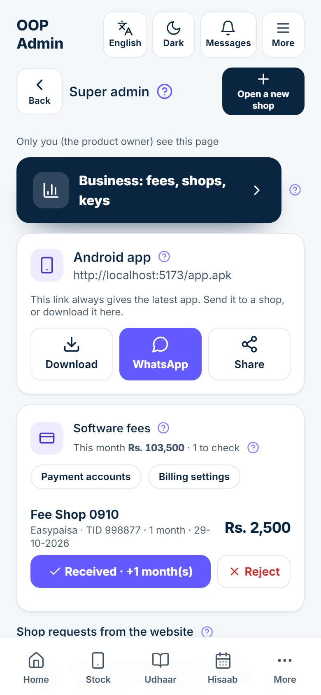
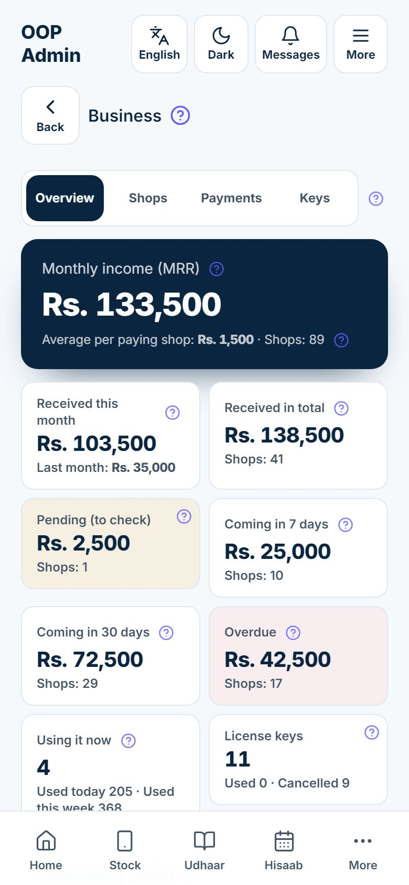
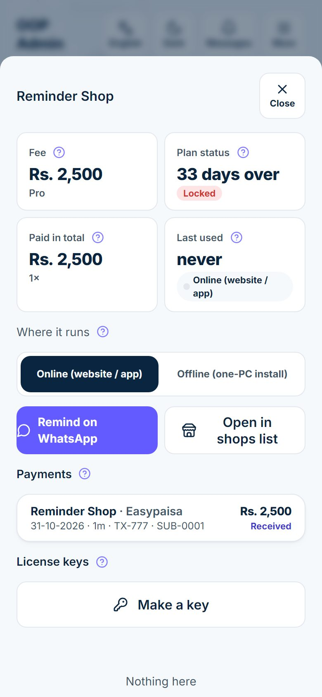
Mobile Shop is sold to shops as a service. Every shop gets its own private stock, khata, bills and staff. The person at OOP Solutions who runs the business side above all these shops is the super admin. Your work is to:
All of this happens inside the same app the shops use. When you log in with the super-admin number, extra screens appear that no shopkeeper sees.
| Word | What it means |
|---|---|
| Plan (package) | trial, basic, pro or chain; decides which parts of the app the shop gets |
| Paid until | The last day the shop's fee covers |
| Grace days | Days after "Paid until" when the shop still works fully, with a red reminder |
| Locked | Grace days are over: the shop can only view, pay and back up its data |
| Renewal code / license key | A signed code that adds months to one shop's plan; works without internet, once |
| Magic link | A web link that shows a key to the shopkeeper for 7 days, without a login |
| One-PC install | The Windows version of the app that runs on one shop computer, without your server |
A person is a super admin only because their mobile number is on the server's list of super-admin numbers. There is no button in the app for it, so no shop owner or staff member can give himself this power. Once the number is on the list, the person simply logs in with it.
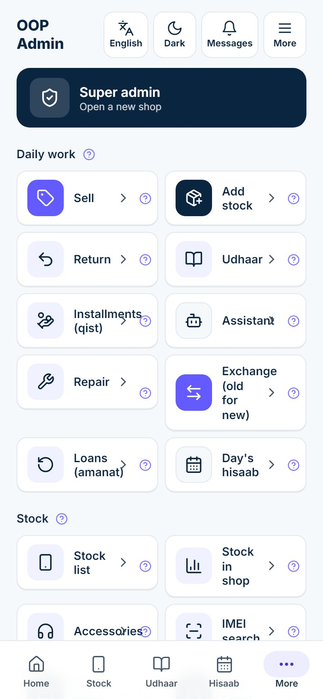
The Super admin page opens. A line under the title says Only you (the product owner) see this page. Shopkeepers and their staff never see this banner or this page.
From top to bottom the page has:
| Part | What it is for |
|---|---|
| Open a new shop (top right) | Opens a new customer shop (chapter 3) |
| Business: fees, shops, keys | Opens the business console (chapter 7) |
| Android app card | The app download link to send to shops (chapter 9) |
| Software fees card | This month's fees and how many payments are waiting, the Payment accounts and Billing settings buttons on their own row, then each payment to check (chapters 4 and 5) |
| Shop requests from the website | People who asked for a shop on the website (only shown when there are some) |
| Password requests | Shop people who tapped "Forgot password?" (only shown when there are some) |
| Search, All · Fees due · Locked and Customer shops | Every shop, with its plan, days left and fee; tap one to manage it |
Every heading has a small ?: tap it for a short explanation with an example.
Shops cannot sign themselves up; every shop is opened by you. Before you start, agree the package and price with the shopkeeper (chapter 4) and ask for the shop's name, city, his name, his mobile number (it becomes his login) and the language his staff read best.
Example: Bilal Ahmed runs Star Mobiles on Hall Road, Lahore. His number is 0321 5550002.
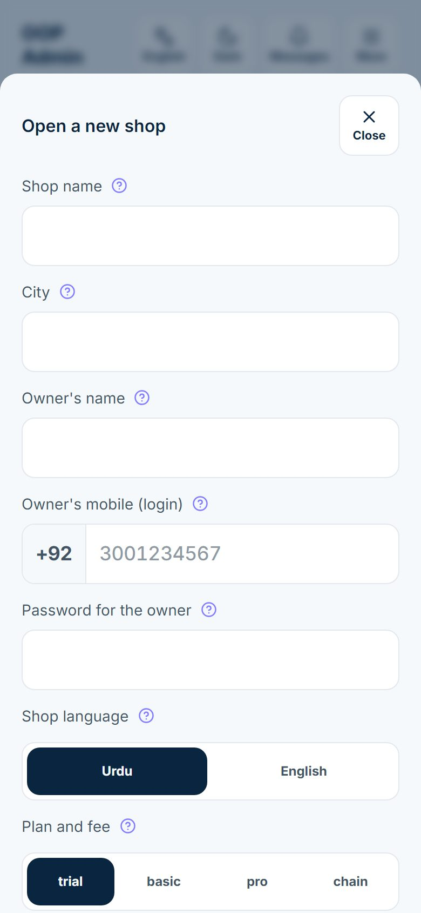
The sheet now says Shop opened and shows Give these login details to the shop owner: the mobile number and the password, in large digits.
The website has an Open my shop form: name, shop name, city, mobile number, the plan (Free trial, basic, pro or chain) and an optional note. When a visitor taps Send request, you get a WhatsApp message and the request appears at the top of the Super admin page under Shop requests from the website.
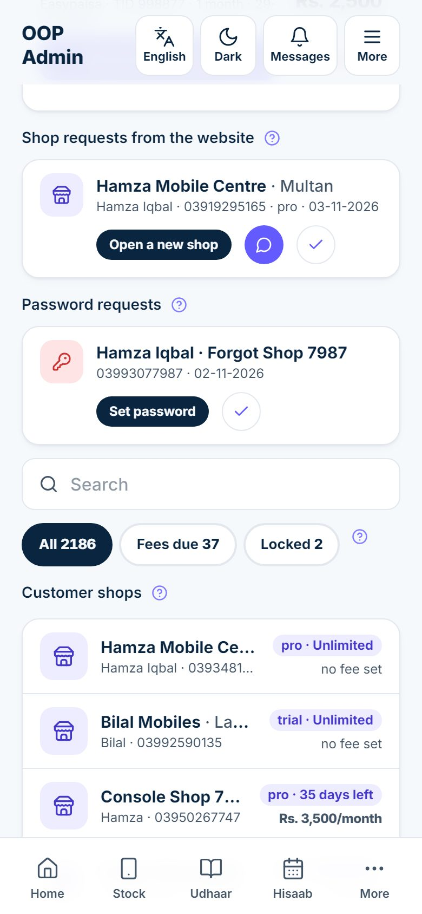
Each request shows the full shop name and city, then the person's name, his number, the plan he chose and the date. On the line under it are three buttons:
| Button | What it does |
|---|---|
| Open a new shop | Opens the new-shop form already filled with his shop name, city, name, number and the plan he chose, plus a ready password. Check it, then tap Open a new shop. The request closes by itself. |
| Green WhatsApp circle | Opens a WhatsApp chat with him, to talk about price or ask a question first |
| Tick | Marks the request done without opening a shop (for example a duplicate, or someone who changed his mind) |
Example: Usman from Saddar, Karachi asks for basic. Tap the WhatsApp circle, agree Rs. 1,500 a month, then tap Open a new shop, check his filled details, tap the button and Send on WhatsApp.
Below the requests is a search box, three filter buttons and Customer shops.
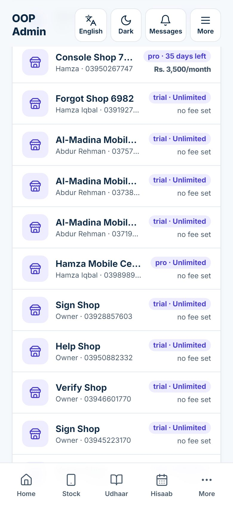
Each row shows the shop and city, the owner and his number, a chip with the plan and time left (for example "basic · 12 days left", "pro · expired 3 days ago", "trial · Unlimited" or "Locked"), and the monthly fee or "no fee set". The filter buttons:
| Button | Shows |
|---|---|
| All | Every shop, with the total count |
| Fees due | Shops whose plan ends in 7 days or less, or has already ended but is still in its grace days |
| Locked | Shops whose grace days are over |
The search box finds a shop by name. Tap a shop to open its sheet: plan, payments, renewal code, password and branches, explained in the chapters below.
When an owner opens a second shop, do not open a new shop for him. Add a branch instead, so he uses the same login and pays one fee.
He now switches between his shops in More → My shops with the same login. Each shop keeps its own stock, khata and bills, while the package and the fee stay one.
Every shop is on one package. The package decides which parts of the app the shop can use. The basics are always on for every package: stock, sale, purchase, return, udhaar khata, payments, bills, ID check, the day's hisaab, settings and staff.
| Package | Who it is for | Extra parts it switches on |
|---|---|---|
| trial | A new shop trying the app | Everything |
| basic | A small shop | Accessories and watches, expenses and day close, hold a sale, tax on bills |
| pro | A busy shop | Everything in basic, plus repairs, exchange, profit and reports, download and share (PDF / Excel), WhatsApp messages and reminders, installments (qist), staff attendance (hazri), the assistant and photo reading |
| chain | An owner with several shops | Everything, including loans to other shops (amanat) |
The website shows these list prices. They are monthly, in rupees. A year paid at once is 12 months for the price of 10, so the shop gets 2 months free.
| Package | Per month | Per year (12 months for the price of 10) |
|---|---|---|
| Free trial | Rs. 0 for 14 days | — |
| basic | Rs. 1,500 | Rs. 15,000 |
| pro | Rs. 3,000 | Rs. 30,000 |
| chain | Rs. 6,000 | Rs. 60,000 |
Tap a shop in Customer shops. Its sheet opens with the owner, the number of users, the plan chip and the Expires date. Scroll to Plan and fee.
Under the fee fields there are three quick buttons: +1 month, +3 months and +12 months. Each one adds months to the plan and saves at once. The months are added from Paid until if that date is still ahead, otherwise from today, so a shop that pays early never loses days.
Example: Star Mobiles is paid until 20 November. Today is 10 November and Bilal asks for 3 more months. Tap +3 months: paid until becomes 20 February.
The button Unlimited does the same thing deliberately: it removes the end date. Use it for your own demo shop, a friend's shop or a lifetime deal.
A 14-day trial. Hamza Iqbal of Hamza Mobile Centre, Multan wants the free trial. Open his shop on trial, then in his sheet set Paid until to 14 days from today, leave the fee empty and tap Save plan. When he chooses basic, tap basic, type 1500 in Monthly fee (Rs), Save plan, and take his first payment (chapter 5).
A year paid at once. Ali Mobiles takes pro for a year and pays Rs. 30,000. Tap pro, type 3000 in Monthly fee (Rs) and Save plan; keep the monthly figure here, because the business console uses it for monthly income. Then Record a payment with amount 30000 and months 12.
The plan chip in Customer shops and in the shop's sheet is violet while the plan runs (or has no end date), turns amber when 7 days or less are left, and red once the plan has ended or the shop is locked.
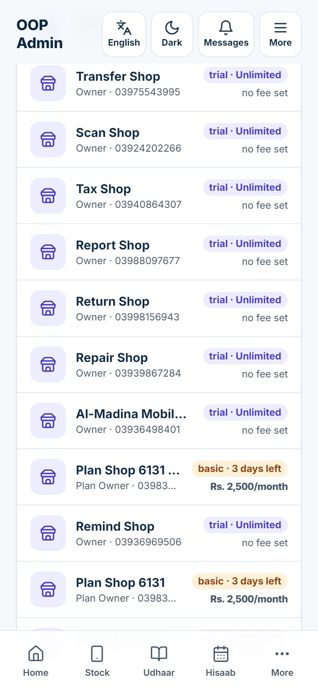
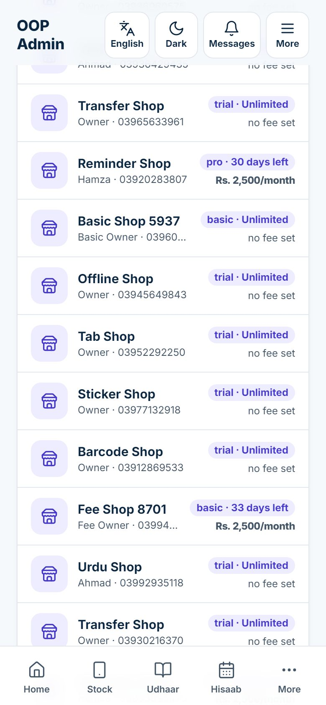
A shop may need one part of a higher package. While Follow the plan is ticked under Modules for this shop, the shop gets its package's parts, and they change by themselves with the package. Untick it and only the parts you tick are on, whatever the package; tick it again to go back.
Example: a basic shop at Rs. 1,500 also wants repairs for Rs. 2,000 a month. Untick Follow the plan (basic), tick Repairs, tap Save modules, then set Monthly fee (Rs) to 2000 and tap Save plan.
These settings are for all shops at once. On the Super admin page, in the Software fees card, tap Billing settings (on the button row under the card's title). If the button is red, your real details have not been filled in yet.
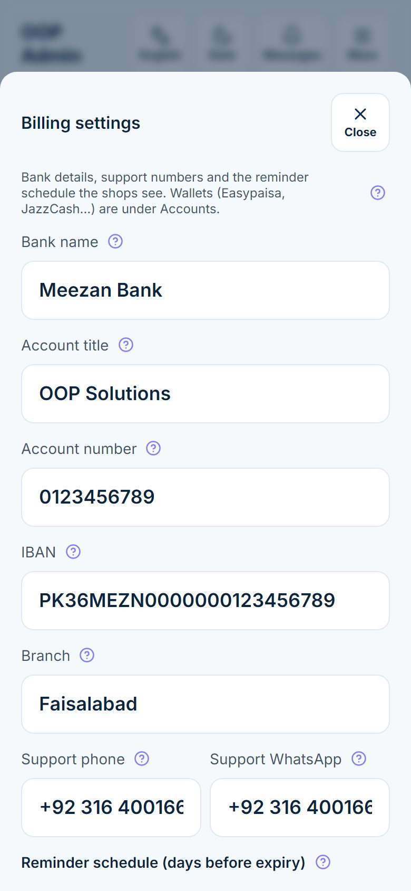
Fill in once:
While the bank lines still say "PLACEHOLDER", the sheet warns Placeholders are still in place — fill in your real details. and shops do not see the bank block at all.
Then the Reminder schedule (days before expiry):
| Field | Default | What it does |
|---|---|---|
| Yellow bar from | 7 | Days before the end date when a small yellow bar appears on the shop's screens. No popup yet. |
| Orange bar + popup from | 3 | The bar turns orange and a reminder popup shows once a day |
| Red bar + popup from | 1 | The bar turns red; the popup comes back after the snooze hours |
| Grace days after expiry | 7 | Days after the end date when the shop still works fully, with a red bar and the popup. After them the shop is locked. |
| Snooze hours | 4 | When the owner taps "Remind me later" on the red popup, it stays away this many hours |
Tap Save. The change applies to every shop at once; no update to the app is needed.
Example with the defaults: a plan ends on 30 November. The yellow bar shows from 23 November, the orange bar and daily popup from 27 November, red on 29 and 30 November. The shop works through its 7 grace days until 7 December and is locked from 8 December.
Easypaisa, JazzCash, SadaPay and other wallets go in a separate list. In the Software fees card tap Payment accounts.
Every shop sees these accounts on its Software fees screen under Pay into one of these, each with a Copy button; the website shows them too.
A trusted customer can get more grace days than the rest. In his sheet, This shop's grace days (empty = default): type a number, for example 15, and tap Save. Leave it empty to use the number in Billing settings.
Example: the default is 7. A dealer who has paid on time for two years gets 15: he is locked only 15 days after his end date.
A shop's plan can be renewed in three ways. Use whichever fits how the money reached you.
| How the money came | What you do | Where |
|---|---|---|
| The shop paid into your wallet or bank and reported it in the app | Check the screenshot, tap Received | Software fees card (this chapter) |
| You received cash or saw a transfer yourself | Record a payment | The shop's sheet (this chapter) |
| A one-PC shop with no internet | Record the money, then send a renewal code | Chapter 6 |
The shop owner opens More → Software fees (or taps the reminder bar), copies one of your account numbers under Pay into one of these and sends the money from his own app. Then, under I have paid, he fills Amount (Rs), Months, Paid through, Transaction ID / reference, Paid on, adds a screenshot and taps Send. His reminder bar turns calm blue ("verification pending"), the popup stops, and the payment shows as Being checked. You get a WhatsApp message.
On the Super admin page, the Software fees card shows a line like "This month Rs. 100,000 · 1 to check", the Payment accounts and Billing settings buttons, and below them every payment waiting for you. Each one shows the shop's name, how it was paid, the transaction ID, the months, the date and the amount (you can see one at the top of the page in chapter 2).
The row disappears at once. The shop's Paid until moves forward by the months he reported (from his current end date if still ahead, otherwise from today), the payment gets a receipt number (SUB-0001, SUB-0002 and so on, across all your shops), and the owner gets a WhatsApp message and a one-time "Thank you, renewed until …" in the app. He can print the receipt from Your payments.
Example: Ali Mobiles sends Rs. 4,500 on Easypaisa for 3 months of basic. You see Rs. 4,500 with the same ID in your Easypaisa, tap Received · +3 month(s), and his plan runs 3 more months.
If the money is not in your account, or the amount is wrong, tap Reject. A box asks Why not? (the shop owner will read this); write a clear reason, for example "No Rs. 1,500 with ID 0123 in our Easypaisa. Please check and send again." The owner sees the payment as Not accepted with your reason and can report it again. His plan does not change. With an empty reason nothing is rejected.
When Bilal hands you Rs. 4,500 in cash, or you see his bank transfer without a report in the app:
A green line shows the receipt number, for example Receipt SUB-0007. The payment is saved as received and his plan is extended by 3 months at once.
All payments from every shop are listed in the business console under Payments (chapter 7), newest first, each with its receipt number and status.
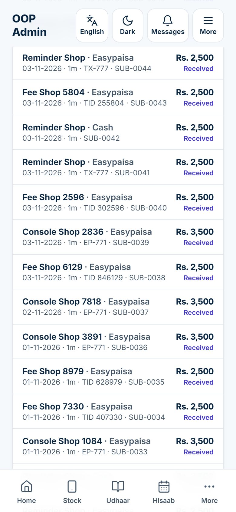
A renewal code (also called a license key) is a long signed code that adds months to one shop's plan. The owner pastes it in More → Software fees → Renewal code and taps Renew with code. It works on the website, the Android app and the one-PC install, without internet, once, and only for the shop it was made for. You need keys mostly for one-PC (offline) shops, which cannot see your approvals on the server.
Either way, every key is kept in the Keys list.
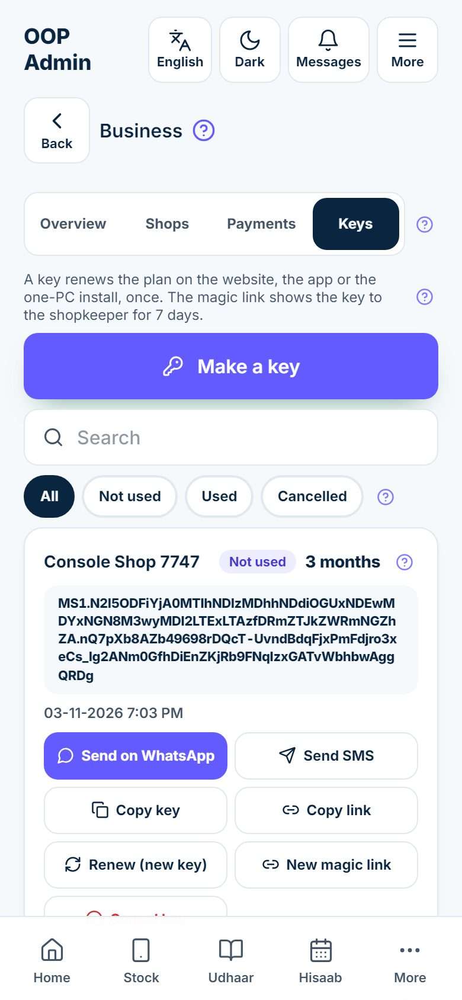
Each key card shows the shop, the status, the months, the full code, when it was made, how many times it was sent and through what, how many times its link was opened, and your note.
| Status | Meaning |
|---|---|
| Not used | Made, waiting for the shop |
| Used | The shop renewed with it, on the website / app or on the one-PC install |
| Cancelled | You cancelled it, or it was replaced by a renewed key; it no longer works |
The buttons on a key that is Not used:
| Button | What it does |
|---|---|
| Send on WhatsApp | Opens WhatsApp with the key and its magic link |
| Send SMS | Opens your phone's SMS app with the same message |
| Copy key | Copies the message, to paste into any app |
| Copy link | Copies only the magic link |
| Renew (new key) | Makes a new key with the same months and cancels this one |
| New magic link | Gives this key a fresh link valid for 7 days; the old link stops working |
| Cancel key | Asks Why cancel this key?, then stops the key working |
A key that is Used has only Renew (new key), which makes a fresh key with the same months and leaves the used one as it is.
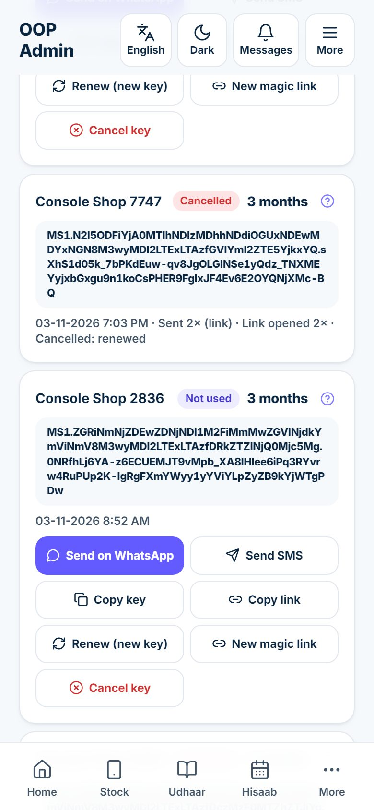
Every message you send from a key card also carries a magic link. The shopkeeper opens it, without any login, and sees Your renewal key: his shop, the months, the key, a Copy key button and the steps "Open the app → More → Software fees → Renewal code → paste the key → Renew." The link works for 7 days, and each opening is counted on the key card, so you know whether he has looked at it.
| Problem | What to do |
|---|---|
| The shopkeeper lost the message | Tap Send on WhatsApp again. It is the same key; the card shows Sent 2×. |
| The link has expired | Tap Send on WhatsApp again: a fresh 7-day link is made by itself |
| You think someone else has the link | New magic link: the old link stops working at once; then send the new one |
| The key went to the wrong number | Cancel key with the reason, then make a new one |
| You made the wrong number of months | Cancel key, then Make a key with the right months |
| A key was used on a one-PC install that is offline, and then you cancelled it | The months already added stay; a key used offline before the cancel cannot be taken back |
The first valid key pasted into a one-PC install links that install to its shop in your records. After that, only keys for that same shop work on it. When the shop PC has internet it checks in with your server, so its last use and its app version show in the business console. That check-in needs one setting on the shop PC (SAAS_URL), set when the install is done, as described in the Operations runbook.
Open the business console from the Super admin page with the dark button Business: fees, shops, keys. The page, Business, has four tabs: Overview, Shops, Payments and Keys. Every figure is worked out from the payments you approved and the plans you set; nothing is typed by hand.
| Tile | What it shows |
|---|---|
| Monthly income (MRR) | The monthly fees of all shops on a paid package (basic, pro, chain) whose plan has not ended. Trial, ended and locked shops are not counted. Example: 3 shops at Rs. 1,500 and a 4th locked: Rs. 4,500. |
| Average per paying shop | MRR divided by the number of shops on a paid package (shown beside it). Ended and locked shops are in that number, so they pull the average down. |
| Received this month | Fees you approved, counted by the day they were paid, from the 1st of this month; Last month below it |
| Received in total | All approved fees since you started; Shops = how many different shops have ever paid |
| Pending (to check) | Reported payments you have not approved or rejected yet; tap it to open Payments |
| Coming in 7 days | Monthly fees of shops whose plan ends in the next 7 days: the shops to remind now |
| Coming in 30 days | The same for the next 30 days, including the 7-day ones |
| Overdue | Monthly fees of shops whose end date has passed (grace or locked): money you should already have |
| Using it now | Online shops used in the last 10 minutes and one-PC installs that checked in within the hour; Used today and Used this week below |
| License keys | Keys made but not used yet; Used and Cancelled below; tap it to open Keys |
Further down: Received by month (a bar for each of the last 12 months), By channel (approved fees per Paid through word, for example "Easypaisa 12 · Rs. 30,000"), By package (shops and monthly income per package) and Who is using it (online and offline shops, and the number of shops in each plan status).
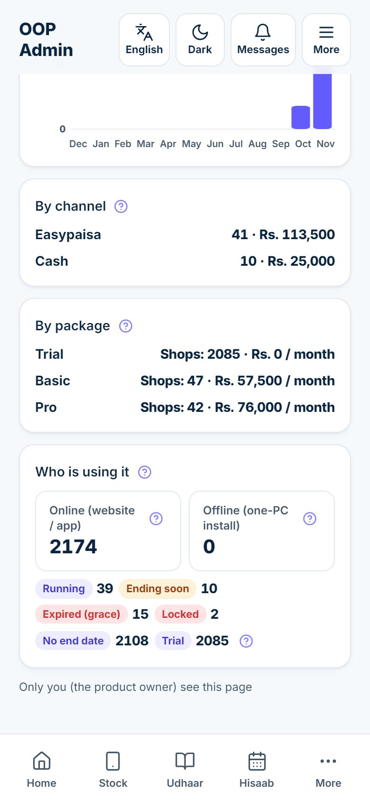
The plan statuses used everywhere in the console:
| Status | Meaning |
|---|---|
| Running | More than 7 days left |
| Ending soon | 7 days or less left |
| Expired (grace) | Ended, but still working in its grace days |
| Locked | Grace days over: view, pay and back up only |
| No end date | Unlimited |
| Trial | On the trial package |
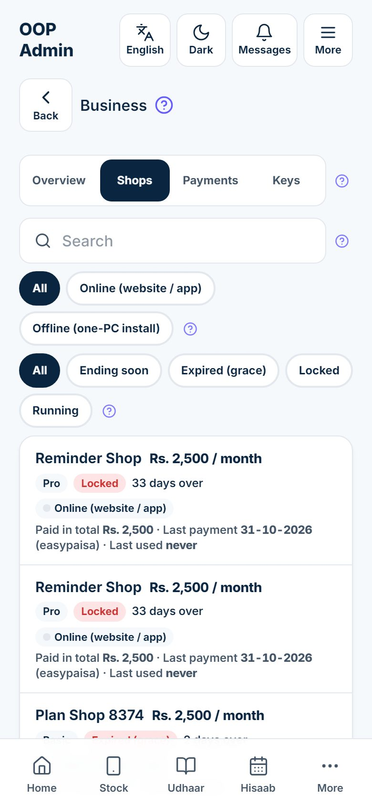
The Shops tab lists every customer, locked and ending shops first. Each line shows the monthly fee, the package, the status and days left or over, Online (website / app) or Offline (one-PC install) (a green dot means in use right now), Paid in total, the Last payment and its channel, any Pending money and Last used.
Search finds a shop by name. The first row of buttons filters by where the shop runs; the second (All, Ending soon, Expired (grace), Locked, Running) by plan status.
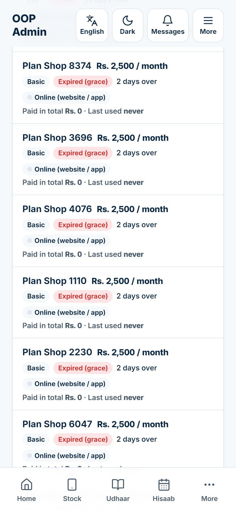
Tap a shop in the Shops tab. Its sheet opens.
| Part | What it shows or does |
|---|---|
| Fee | The monthly fee, with the package below it |
| Plan status | Days left, or days over, with the status chip; ∞ means no end date |
| Paid in total | All approved fees from this shop; the × figure is how many payments |
| Last used | When someone in this shop last used the app (for a one-PC install, when it last checked in) |
| Version | Only for a one-PC install: the app version that PC reported, so you know if it needs an update |
| Where it runs | Tap Online (website / app) or Offline (one-PC install). Set it yourself after installing the Windows version at a shop. |
| Remind on WhatsApp | Opens WhatsApp with a ready reminder: the shop's plan, when it ends or that it has ended, the fee, and "More → Software fees to pay" |
| Open in shops list | Jumps to this shop's sheet on the Super admin page, to change its plan, take a payment or set a password |
| Payments | Every fee this shop reported or you recorded, with channel, date, months, receipt and status |
| License keys | This shop's keys, with Make a key |
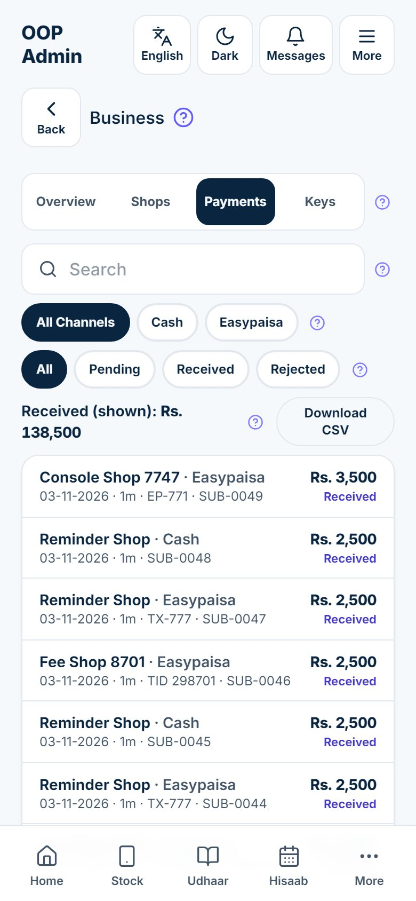
The Payments tab lists every fee from every shop, newest first: shop, channel, date paid, months ("1m"), reference, receipt number, amount and status (Pending, Received or Rejected).
The Keys tab is described in chapter 6.
On the login screen anyone can tap Forgot password? and type their mobile number. A shop owner's request comes to you, on WhatsApp and under Password requests on the Super admin page. A staff member's request goes to his own shop owner (who resets it in More → Staff); it also shows in your list with his role, in case the owner asks for help.
Each password request shows the person's full name and shop, his number and the date, with Set password and a tick on the line under it (you can see one in chapter 3).
The old password stops working at once and the request closes by itself. Set the owner's instead switches from the staff member to the owner. When an owner calls you without using the app, open his shop from Customer shops and start at step 3.
The tick on a request row marks it done without changing anything, for example when the person remembered the password.
When an owner says "a sale is missing" or "my khata looks wrong", you can see his shop with your own eyes.
The app now shows his shop as if you were inside it: his home screen, stock, khata and sales. Your visit is written in that shop's activity log, so the owner can always see that you came in. To go back, tap More → Super admin.
A shop is locked when its grace days are over and no payment has been approved. It sees a full-screen notice. It can still log in and see everything, pay you from More → Software fees, and download all its lists with Backup my data. It cannot sell, buy or change anything until it is renewed. Nothing is ever deleted; the day it is renewed, everything works again exactly as before.
To unlock a shop, do one of these on its sheet in Customer shops:
| Situation | What to do |
|---|---|
| He paid and reported it | Approve it in the Software fees card |
| He paid you in cash or you saw the transfer | Record a payment |
| He promises to pay in a few days and you trust him | Raise This shop's grace days, for example to 15, and Save |
| A one-PC shop with no internet | Record the payment, then send a Renewal code |
| Your own or a friend's shop | Unlimited |
The shop unlocks as soon as you save; the owner only needs to refresh the app.
If a shop simply stops paying, you need do nothing: it moves through the reminders, grace days and lock by itself. If the owner comes back months later, record his payment and he carries on with all his old stock and khata.
The Android app card on the Super admin page has the download link of the shop app for Android phones. The link is your website address followed by /app.apk, for example https://mobileshop.oopsolutions.com/app.apk. It always gives the newest version, so the same link works for every shop, today and after every update.
The login message you send when you open a new shop (chapter 3) already includes this link.
| When | What to do | Where |
|---|---|---|
| Every day | Check each payment waiting ("N to check") against your wallet or bank app; approve or reject | Super admin → Software fees card |
| Every day | Answer Shop requests from the website and Password requests | Super admin page, top |
| Every day | Record a payment for any cash or transfer you received by hand | The shop's sheet |
| Every week | Send Remind on WhatsApp to every shop Ending soon; call Expired (grace) and Locked shops | Business → Shops |
| Every week | Call shops with Last used never, and shops whose keys are still Not used | Business → Shops and Keys |
| Every month | Compare Received this month with your statements; Download CSV of received payments for your accountant | Business → Overview and Payments |
| Every month | Set Paid until for shops on No end date that should be paying; plan updates for one-PC installs with an old Version | Super admin list; Business → Shops |
| When it changes | New bank account, wallet, support number or reminder timing | Billing settings, Payment accounts |
His payment is waiting for you. Look in the Software fees card for his payment and tap Received. If he paid in cash or you cannot find a report, use Record a payment in his sheet. If he is on a one-PC install, record the payment and send him a Renewal code.
The receipt and the history stay, because the money records are never deleted. Open the shop's sheet and set Paid until back to the right date, then Save plan. Write what happened in Note (only you see it).
Open its sheet, tap pro, change Monthly fee (Rs), and tap Save plan. If Follow the plan is ticked under Modules for this shop, the new parts switch on by themselves.
The shop is on trial and has no end date, so it will never be reminded or locked. Set Paid until if the trial should end.
If it is still Not used, tap Cancel key with a reason and make a new one. If it has already been Used, correct Paid until on the shop's sheet instead.
The one-PC install reports to you only when that PC has internet and its check-in setting is in place. Check the internet at the shop, and ask whoever installed it to check the setting described in the Operations runbook. The shop's work is not affected either way.
Yes, but only through the server: their mobile number is added to the super-admin list, as described in the Operations runbook. Give this only to people you trust with every shop's data and your income figures.